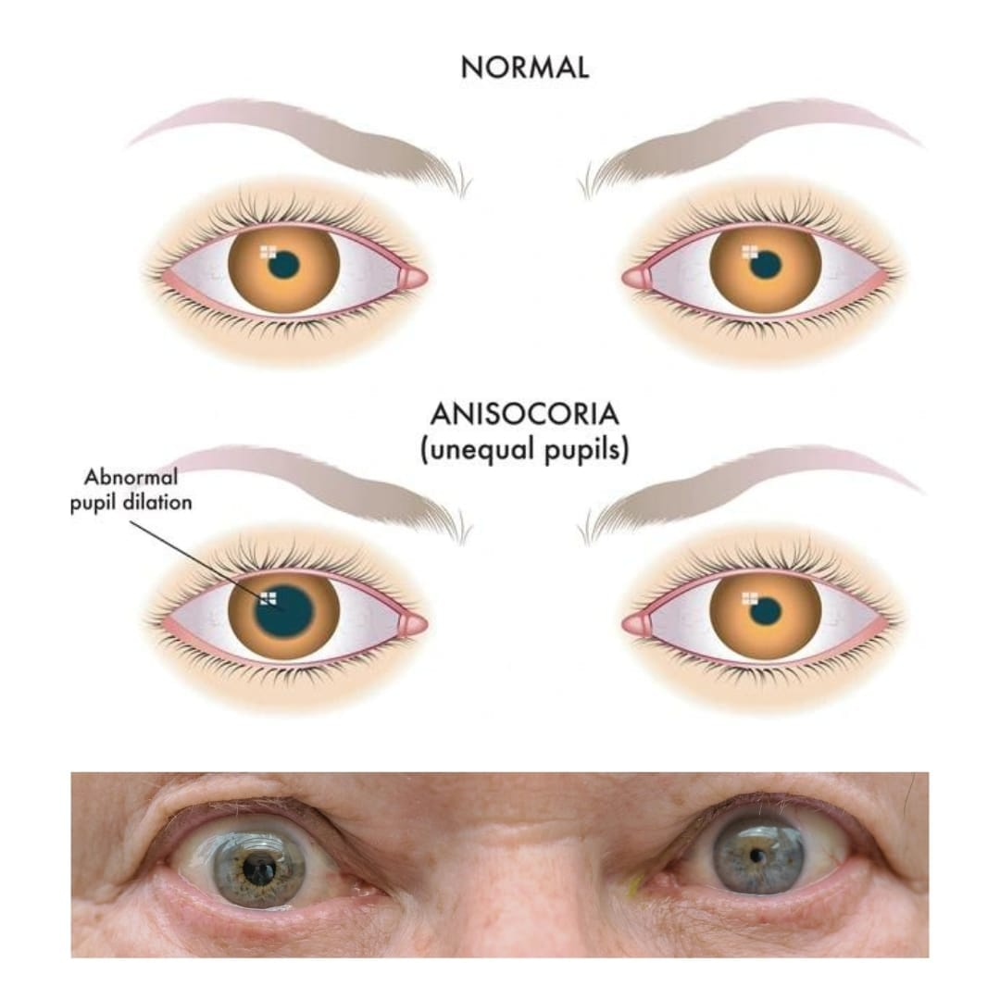

Calculating IOL power in an eye with prior LASIK, PRK, or RK is one of the most reliably tricky problems in cataract surgery — standard keratometry-based formulas, which work well in virgin eyes, become systematically unreliable here, and the fix isn't a single formula but knowing which tool to reach for and why.
Conventional IOL formulas assume a fixed, "normal" relationship between the cornea's anterior and posterior curvature — but myopic LASIK/PRK flattens the anterior cornea without proportionally flattening the posterior surface, and hyperopic LASIK/PRK does the reverse. Standard keratometry only measures the anterior surface and then assumes that fixed ratio to estimate total corneal power — an assumption refractive surgery directly violates. The predictable result if this isn't corrected for: a myopic surprise (under-powered IOL, patient ends up more hyperopic than planned) after prior myopic LASIK/PRK, or a hyperopic surprise after prior hyperopic treatment.
| Category | Requires | Examples |
|---|---|---|
| "With-history" methods | Documented pre-refractive-surgery keratometry and the amount of refractive correction achieved | Clinical History Method, Masket, Modified Masket, Barrett True-K (with history) |
| "No-history" methods | Only current measurements — essential when old records are unavailable, which is common in real practice | Shammas-PL, Haigis-L, Barrett True-K No History, Wang-Koch-Maloney |
🔧 ASCRS Post-Refractive IOL Calculator — the current standard reference tool, free to use. It runs three separate modules (prior myopic LASIK/PRK, prior hyperopic LASIK/PRK, prior RK) and outputs results from multiple validated formulas side by side — including Barrett True-K No History, Shammas, Haigis-L, and Wang-Koch-Maloney — plus an averaged recommendation, so you can see at a glance whether the formulas agree or diverge.
📐 Barrett True-K (with and without history) is also accessible via APACRS's own IOL formula suite, alongside Barrett's other calculators (Universal II, Toric).
Key references: Comparison of ASCRS formulas and Barrett True-K TK in eyes with prior laser refractive surgery. PMC. 2024. | Post-Refractive IOL Calculations: Barrett True-K, Barrett True-K TK, ASCRS Calculator, and Haigis TK. ASCRS Annual Meeting. 2023. | Shammas J. Post Refractive IOL Power Calculations. IOL Power Club. | Online IOL Power Calculators, Springer Nature.
Want to know more about treatment? Read about Corneal Topography at Sadbhaav or book a consultation with Dr. Dhaval Patel.